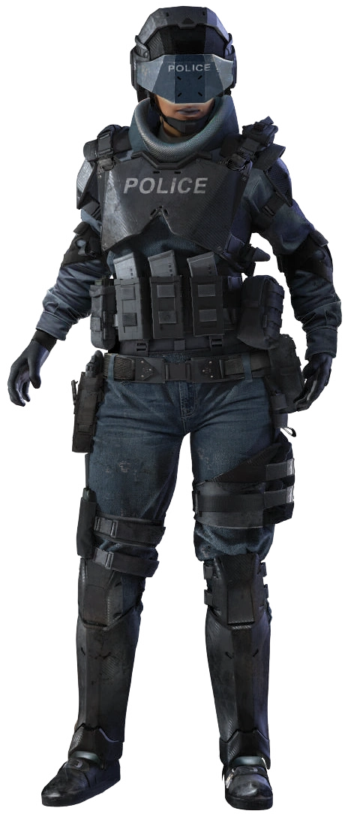

Твоя Работа
Законник - Ролевая Способность

"Слушай, малыш, называй нас как хочешь. Законники, значки, свиньи. Нам всё
равно. Город лежит в руинах, и каждый день мы видим, как люди сопротивляются
его восстановлению. Бустеры, киберпсихопаты, террористические группировки,
худшие из худших. Я здесь не ради славы, я не собираюсь сверкать пистолетом и
вести себя как какая-то большая шишка соло. Я дала клятву защищать этот город, и я
серьезно отношусь к этой клятве. Кто-то должен следить за безопасностью на улицах,
чтобы такие гражданские, как ты, могли дойти до продуктового, не словив шальной
пули из-за войны банд. И в этом вся я."
— офицер Сюри "Кавалерия" Наварро, NCPD
Ролевая способность законника - Подкрепление. Законник может призвать на помощь группу
своих коллег по правопорядку, в зависимости от ранга законника и условий, при которых
происходит вызов. Подкрепление будет вооружено и бронировано в соответствии с таблицей
ниже, управляет ими ГМ.
По мере повышения ранга законника, он, скорее всего, получит повышение в своей текущей
организации или будет завербован правоохранительными органами, из которых он в данный
момент может вызвать подкрепление.
В случае опасности вы можете вызвать подкрепление из группы вашего ранга или ниже.
В качестве действия вы делаете бросок на d10, равный или меньший, чем ваш ранг подкрепления,
чтобы заставить кого-нибудь откликнуться на ваш призыв.
Если вы злоупотребите этим, ваш босс вышвырнет вас из отдела или наложит на вас взыскание по своему усмотрению.
После того, как кто-то откликнется на ваш вызов, вы бросаете d6, чтобы узнать, через сколько
раундов на место прибудет подкрепление.
Если вы выбросите 6, вместо вашего обычного подкрепления прибудет подкрепление уровня +1 от вашего,
если только вы не 10 ранга, в этом случае прибудут две отдельные группы подкрепления.
Если на ваш вызов никто не откликнулся, вы всегда можете повторить вызов подкрепления в следующем раунде.
Ранги Подкреплений
🔴 Боевой Номер: Уровень Навыка, используемый для нападения или защиты.
Этот номер объединяет в себе СТАТ и Навыки.
К этому значению вы добавляете 1d10, каждый раз когда
применяете их оборудование, атакуешь, или защищаешься. Подкрепление не может уклонятся от пуль.
🔴 ОС: Поглощаемый Урон броней на теле и на голове.
🔴 ПЗ: Количество Здоровья, каждого члена подкрепления.
🔴 СКО и ТЕЛ: Характеристики Скорость и Телосложение подкрепления,
необходимые для перемещения и некоторых эффектов связанных с ними (например Спасброск).
Полный список возможных подкреплений можно посмотреть на сайте NCPD